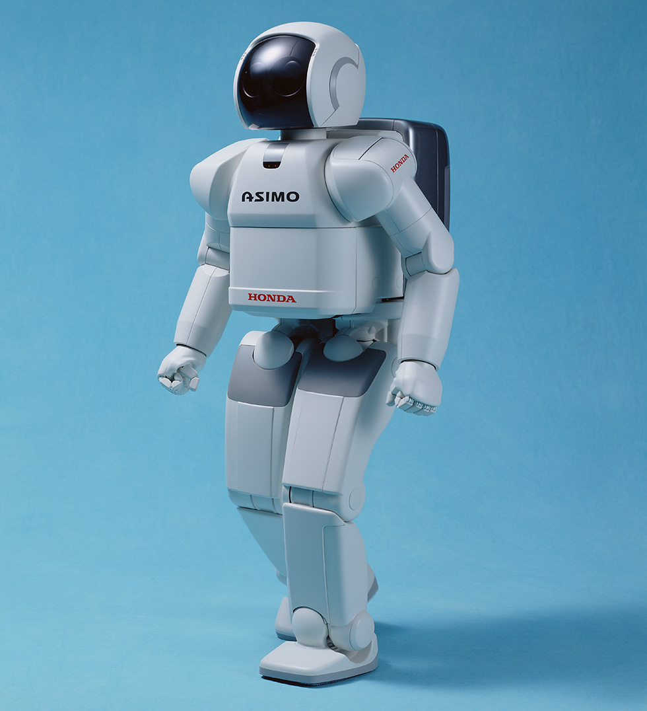
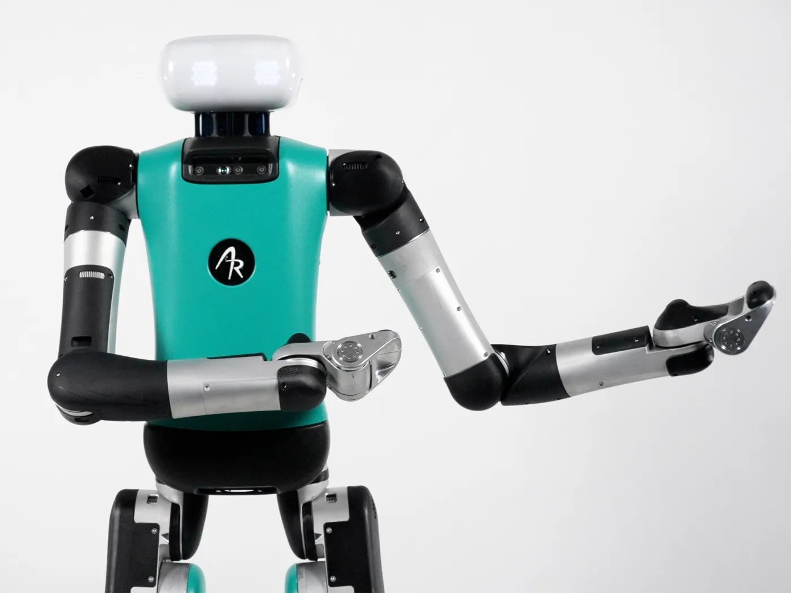
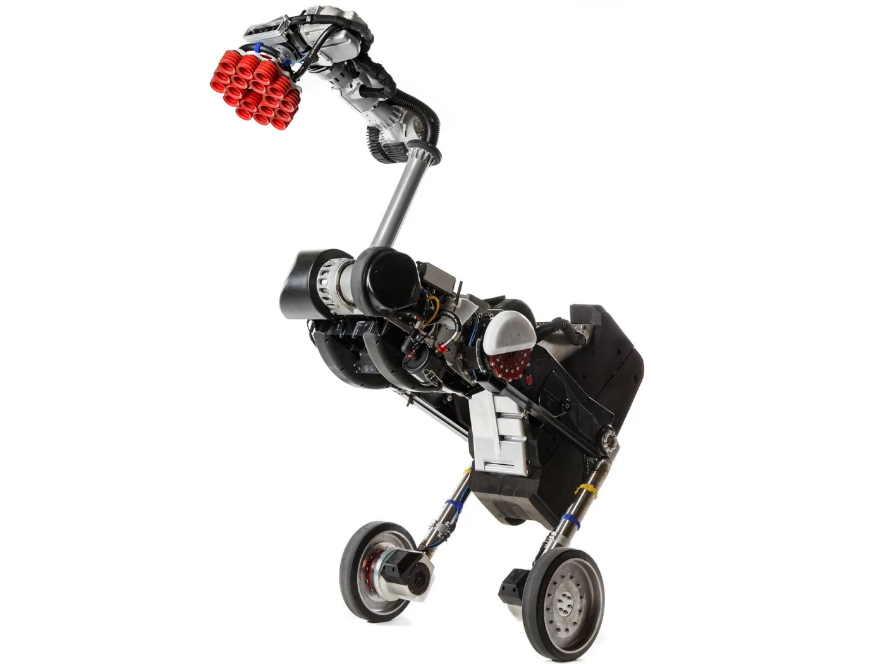
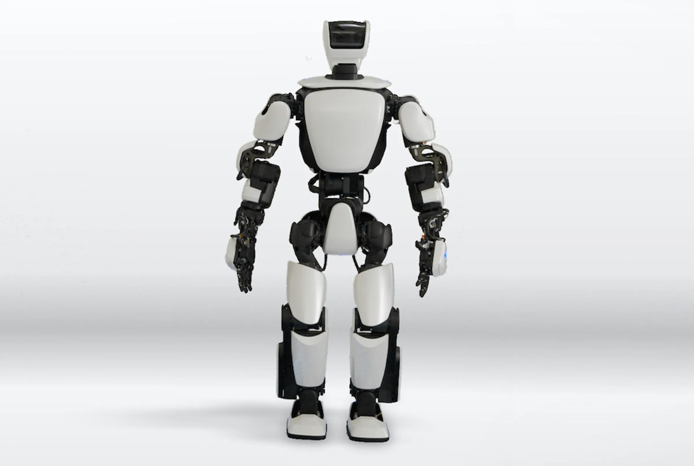
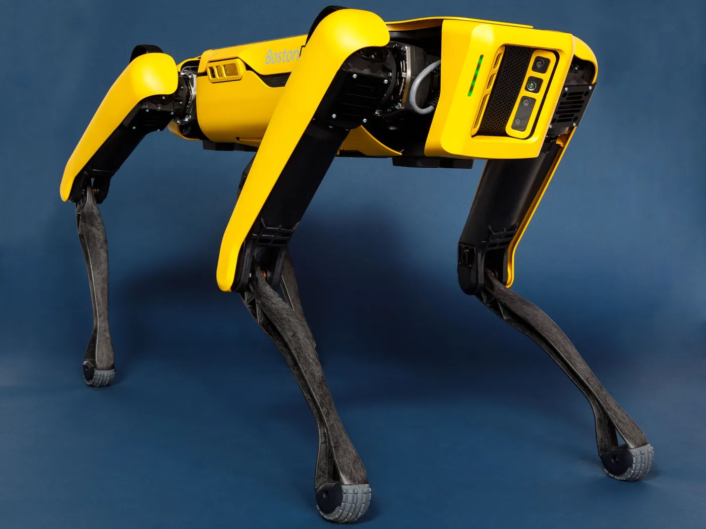
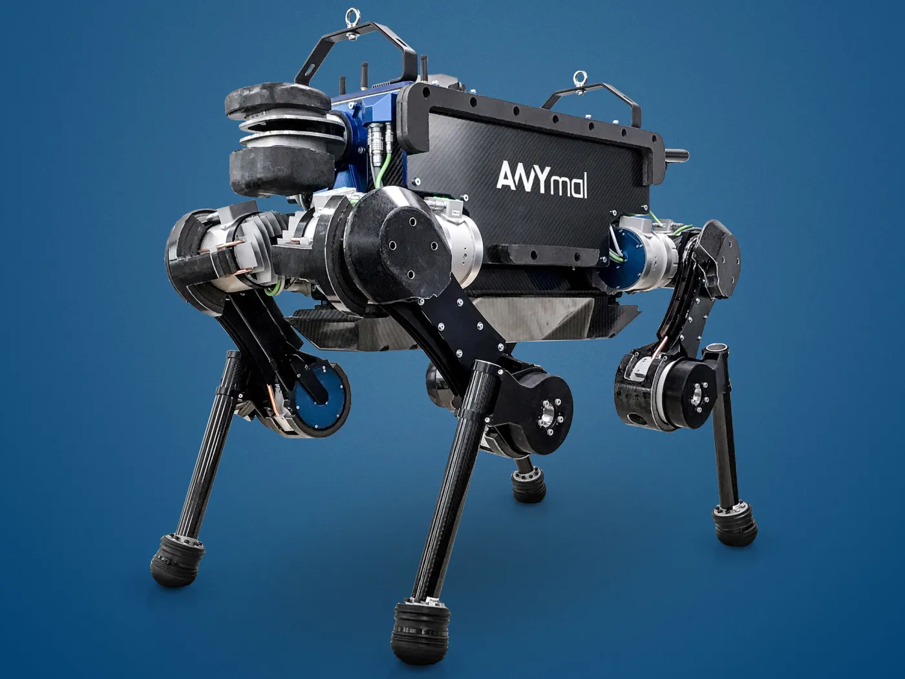
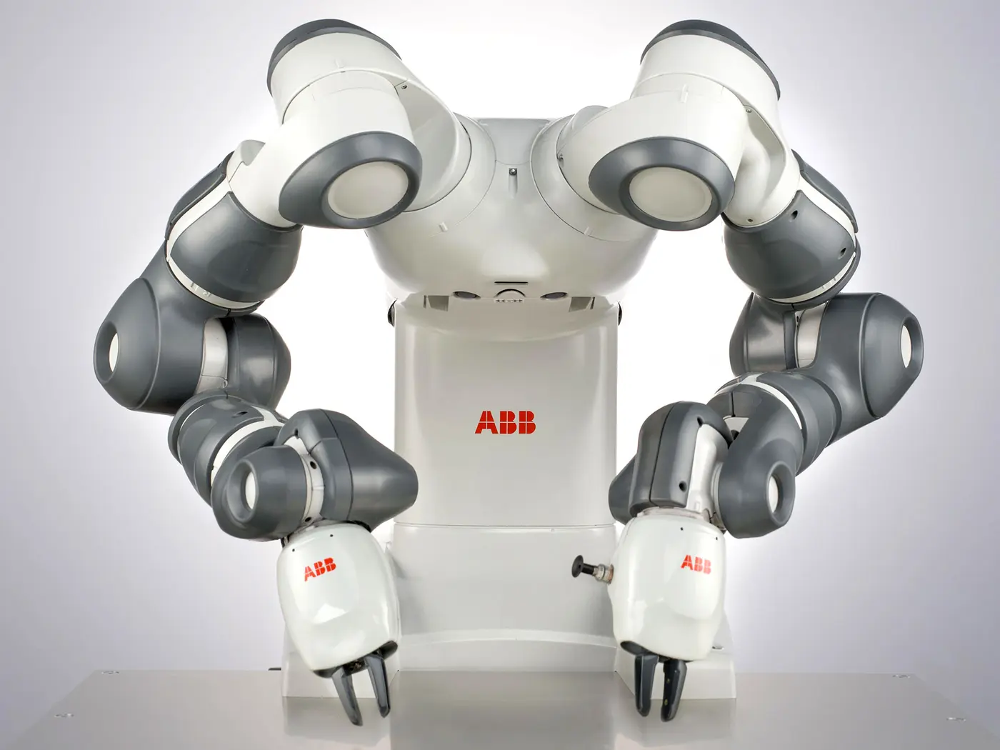

ASIMO
Honda | Japan | Humanoid
View ProfileGLOBAL ROBOT INDEX
A curated list of high-impact robots across humanoid, quadruped, and industrial categories. Every profile links to a dedicated page with embedded video and specs context.

Honda | Japan | Humanoid
View Profile
Boston Dynamics | US | Humanoid
View Profile
Agility Robotics | US | Humanoid
View Profile
Boston Dynamics | US | Mobile Manipulator
View Profile
Apptronik | US | Humanoid
View Profile
Toyota | Japan | Humanoid
View Profile
Boston Dynamics | US | Quadruped
View Profile
ANYbotics | Switzerland | Quadruped
View ProfileUnitree | China | Humanoid
View Profile
ABB | Switzerland/Sweden | Industrial Cobot
View Profile